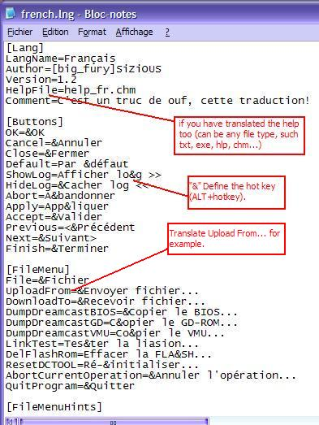

| 9.
Ajouter une nouvelle langue |
Comment ajouter une nouvelle langue? Vous
connaissez un autre langage que le Français et l'Anglais? Bien, cette
rubrique est pour vous, si vous souhaitez traduire DC-TOOL GUI.
Voici les différentes étapes
:
- Allez dans le dossier Lang
présent dans le dossier principal de DC-TOOL GUI.
- Copiez le fichier french.lng,
renommez-le en "<your_language>.lng".
- Ouvrez le fichier <your_language>.lng.
- Traduisez les lignes en suivant
ce qui y'a avant le signe "=".
- Fermez le fichier une fois
terminé.
- Pour tester la langue, lancez
le programme lancez lang.exe du dossier DC-TOOL
GUI.
- Choississez votre langue.
- Admirez le résultat
;)
Exemple :

Si vous voulez vous pouvez
ensuite me le soumettre.